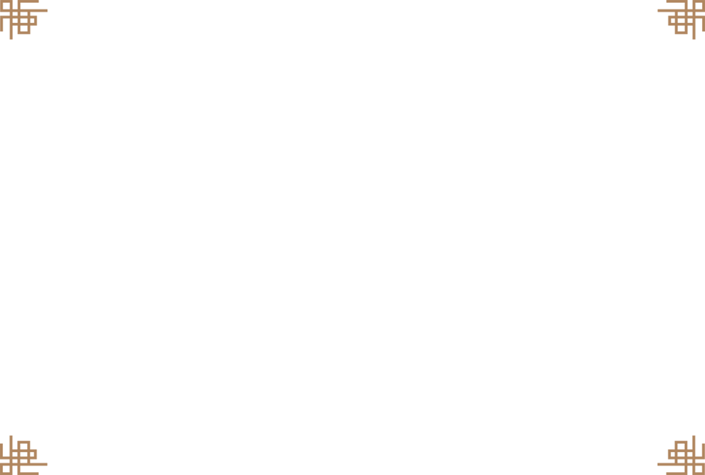

주소: 서울특별시 중구 세종대로 40
대중교통
지하철 서울역 4번 출구에서 256m
버스 01, 402, 405, 708, 799, 7011번
서울시티투어버스
도심·고궁 코스
22곳의 정류장을 순환하는 투어로, 서울시내의 고궁뿐 아니라 N서울타워, 명동, 이태원, 남대문시장, 국립중앙박물관 등 인기 관광지로 여러분을 안내합니다.
전화 : 02-777-6090
http://www.seoulcitybus.com/

^
TOP